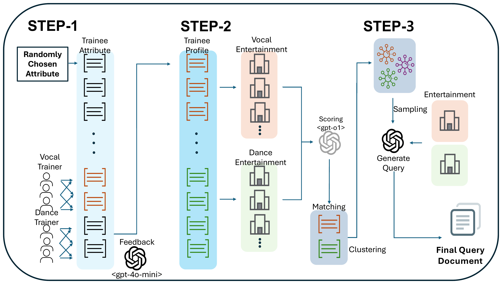

연예기획사·연습생 매칭 스타트업과 함께, 75명뿐인 희소한 문화예술 연습생 데이터를 LLM 기반 3-Step 파이프라인으로 증강하고, DPR 기반 단일 벡터 검색 모델로 연습생-기획사 매칭이 가능함을 실험으로 검증한 연구 프로젝트입니다. 이 논문에 포함된 데이터 생성 파이프라인·검색 모델 적용·실험 전체를 공동 제1저자로 담당했습니다.
데뷔조인으로부터 수집한 실제 연습생 프로필은 75명뿐이라, 학습·평가에 쓰기엔 데이터가 지나치게 희소했습니다. 연습생 정보는 예술적 역량·재능·창의성 같은 정성적 메타 정보와 트레이너의 주관적 피드백으로 구성되는데, 규칙 기반 매칭으로는 이런 정성적 의미를 반영하기 어렵고, 검색 모델을 쓰면 의미 관계를 반영할 수 있지만 정작 학습·검증에 쓸 데이터 자체가 부족한 새로운 도메인이라는 게 핵심 문제였습니다. 매칭 서비스 특성상 정확도뿐 아니라 실시간 응답에 필요한 연산 속도도 함께 만족해야 했습니다.

[Step 1] 연습생 프로필 생성
특징 속성(나이·성별·선호 스타일) + 연습 기준(보컬·댄스)
─▶ 트레이너 페르소나(냉정함/느슨함/분석적) × gpt-4o-mini
─▶ 연습생 메타 정보 + 트레이너 피드백
[Step 2] 연습생-기획사 매칭 정보 생성
연습생 프로필 + 기획사 선호 정보
─▶ LLM-as-a-judge(o1)가 1-5점 유사도 평가
─▶ threshold 이상이면 매칭 관계로 정의
─▶ one-hot 속성 벡터 K-Means 클러스터링 (매칭 다양성 확보)
[Step 3] 질의 생성
클러스터별 5-10명 임의 샘플링 → 후보군 구성
─▶ 프롬프팅으로 같은 후보군 공유하는 질문 5개씩 생성
[검색 모델 실험]
증강된 프로필 Collection ─┬─▶ BM25 (키워드 매칭 베이스라인)
├─▶ DPR (Dense, 단일 벡터 검색) ──▶ 최종 채택
└─▶ Cross-Encoder (질의·문서 결합 인코딩)
| 항목 | 검토한 후보 | 최종 선택 | 선택 이유 |
|---|---|---|---|
| 검색 모델 | BM25(키워드 매칭) / DPR(단일 벡터, Dense) / Cross-Encoder(질의-문서 결합 인코딩) | DPR | Cross-Encoder가 HIT@20 94.7%로 정확도는 가장 높았지만 검색 시간이 653.2~1924.0ms로 후보 수에 비례해 계속 느려져 실시간 매칭에 부적합했습니다. BM25는 키워드가 그대로 일치할 때만 강해 상위 랭킹 정밀도(HIT@1 5.3%)가 낮았습니다. DPR은 정확도는 Cross-Encoder보다 낮지만 속도가 10배 가까이 빨라, 실시간 매칭 서비스라는 목적에 가장 적합했습니다. |
| 데이터 증강 방식 | 규칙 기반 증강(속성 랜덤 조합) / LLM 3-Step 생성 파이프라인 | LLM 3-Step 파이프라인 | 규칙 기반 조합은 트레이너 피드백처럼 정성적인 텍스트를 만들 수 없고, 매칭 정보·질의까지 일관되게 생성하기 어렵습니다. LLM 기반 단계적 생성(프로필→매칭→질의)은 도메인 지식(트레이너 페르소나, 평가 기준)을 반영하면서도 규모를 자유롭게 확장할 수 있었습니다. |
| 매칭 다양성 확보 | LLM-as-a-judge 점수만으로 매칭 / one-hot 속성 K-Means 클러스터링 추가 | 클러스터링 추가 | 점수 기반 매칭만 쓰면 특정 패턴에 쏠린 매칭 쌍이 반복 생성될 위험이 있어, 속성을 one-hot 벡터화해 K-Means로 클러스터링하고 이를 기준으로 샘플링해 매칭 쌍의 다양성을 강제로 확보했습니다. |
LLM으로 만든 silver-standard 데이터만으로 성능을 측정하면 착시가 생길 수 있어, 원본 실데이터 38개 테스트셋을 고정해두고 모든 실험에서 "증강 데이터 기준 성능"과 "원본 테스트셋 기준 성능"(표에서 괄호 안 수치)을 항상 같이 측정했습니다. 두 수치가 크게 벌어지지 않는다는 걸 확인해서, 생성된 데이터가 실제 도메인에도 일반적으로 쓰일 수 있음을 검증했습니다.
원본 데이터만으로 실험했을 때 Cross-Encoder가 HIT@20 94.7%로 가장 정확했지만, 검색 시간이 653.2ms로 가장 느렸고, 이 연산 시간은 증강되는 프로필 양에 비례해 계속 늘어났습니다(1:2 비율에서는 1924.0ms까지 증가). 실시간 매칭이 중요한 서비스 특성상 이 정도 지연은 실용적이지 않다고 판단해, 정확도는 Cross-Encoder보다 낮지만 속도가 10배 가까이 빠른 DPR을 실서비스에 더 적합한 방식으로 결론지었습니다.
LLM-as-a-judge 점수만으로 연습생-기획사를 매칭하면 특정 패턴에 쏠린 매칭 쌍만 반복 생성될 위험이 있어, one-hot 속성 벡터 기반 K-Means 클러스터링을 추가해 매칭 쌍의 다양성을 강제로 확보했습니다.
데이터 생성 파이프라인 전체가 gpt-4o-mini(피드백 생성)와 o1(매칭 스코어링)을 이용한 완전 자동화 프로세스라, 75 → 150 → 225 → 300명 규모로 배수 증강이 재현 가능함을 실험으로 직접 증명했습니다. 실 서비스 적용을 고려해 정확도 1위 모델을 그대로 채택하지 않고, 정확도·속도·연산 비용을 함께 저울질해 실시간 응답이 가능한 모델(DPR)을 최종 후보로 선정한 것도 이 부분과 연결됩니다. 다만 이 논문 자체는 오프라인 실험/평가 단계까지이며, 실서비스 배포·모니터링 체계는 범위에 포함되지 않았습니다.